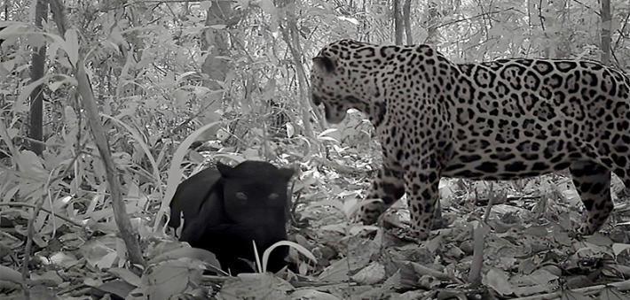

In a feisty first, a black jaguar was recorded mating in the wild. This NSFW clip was captured at Serra do Pardo National Park in the Brazilian Amazon.
It’s tricky to document jaguars outside of captivity because they’re highly elusive and solitary predators. But during an expedition to track biodiversity in understudied areas of the Brazilian Amazon, researchers captured this six-minute video clip of the two cryptic cats. Their findings were recently reported in the journal Ecology and Evolution.
“We hit the proverbial jackpot,” said study author Carlos Peres, a conservation biologist at the University of East Anglia, in a statement. “If they’d moved a few meters we would have missed everything!”

CAT COURTSHIP: This still is from a clip of a never-before-seen sexual encounter that offers helpful hints into elusive jaguar behavior. Credit: UEA / YouTube.
When studying the clip, the researchers investigated how two key aspects might influence jaguar mating:coat color and wild versus captive settings. The female’s dark coat, which results from a genetic mutation, may also influence mating behaviors or fertility. (Dark coats like this one tend to be more prevalent in humid environments like the Amazon and affect some 10 percent of jaguars worldwide.) The video also helps answer questions of whether jaguars living in the wild mate differently than their counterparts in captivity, where jaguars typically have low reproductive success.
Overall, the recorded encounter suggests that jaguar courtship seen in captivity is similar to the rituals that occur deep in the jungle, and that the female’s black coat didn’t appear to influence the interaction. The specifics of this clip, along with future research, could help guide matchmaking and the timing of artificial insemination in captive breeding programs.
The team might have also spotted the female jaguar playing a reproductive trick previously documented in jaguars and other big cats—she seemed to exhibit certain signs of lactation, including swollen nipples, suggesting she wasn’t actually fertile at the time.
This clever cat may have harnessed the “hide-and-flirt” strategy: Male jaguars sometimes kill non-related cubs in order to mate with their mothers, so the females with recent litters may hide their offspring and mate with courting males to confuse them regarding their own paternity status. Mating outside of ovulation could also serve to “deplete the sperm reserves of males, thereby reducing fertilization success in rival females,” according to the paper.
This romantic revelation is just the tip of the iceberg. Researchers still don’t have a firm grasp of the behavior of most Amazonian species in the wild. But filming these jaguars at just the right moment provides a non-invasive peek into their mysterious private lives. 
Watch the video here.
Lead image: Adrian Dockerty / Shutterstock